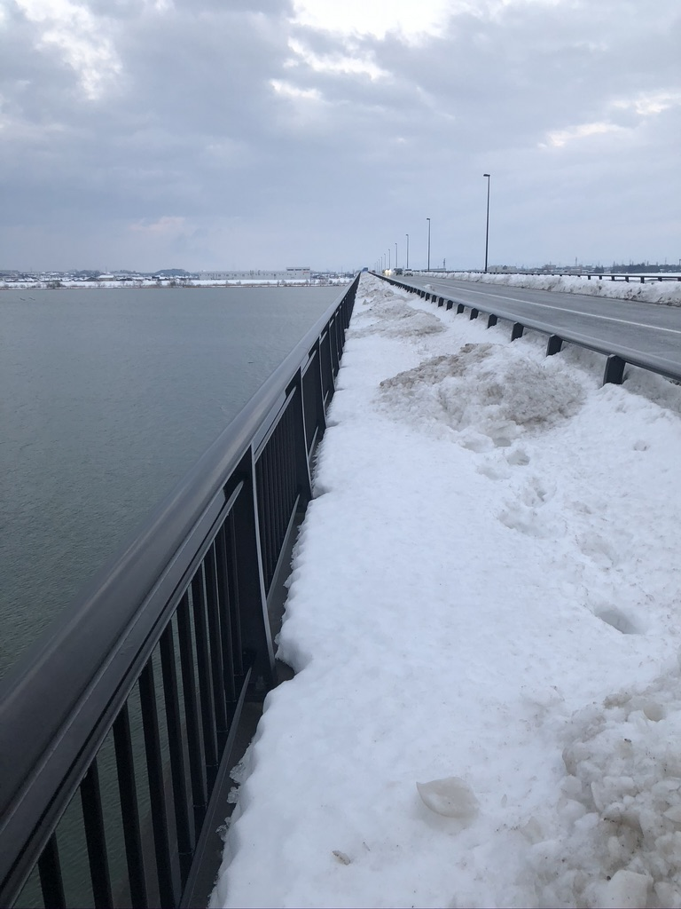

アプリ開発「雪かき支援隊アプリ」
なぜこのテーマを選んだか

この写真をご覧ください。
今年の冬、私がジョギング中に撮影しました。
除雪した雪が積まれて、歩道が通れない「ござれや大橋」です。
一人では無理だけど、
どうにかしたいと思っている人たちが立ち上がれるような場を作りたいと思い
今回のテーマを選びました
漠然としていますが、この二つの方向性で開発を始めました
・地図上で会話ができる
・地域の情報が集まるコミュニティスペース